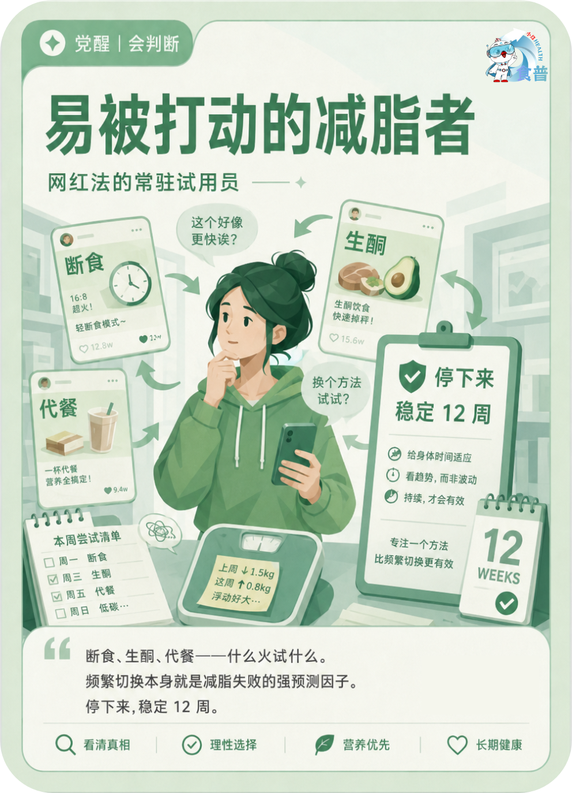

体重管理人群
觉醒
会判断
W15
易被打动的减脂者
网红法的常驻试用员
断食、生酮、代餐——什么火试什么。频繁切换本身就是减脂失败的强预测因子。停下来,稳定 12 周。
手机端可点击“打开原图”后长按图片保存；也可以直接长按上方图卡保存。

网红法的常驻试用员
断食、生酮、代餐——什么火试什么。频繁切换本身就是减脂失败的强预测因子。停下来,稳定 12 周。
手机端可点击“打开原图”后长按图片保存；也可以直接长按上方图卡保存。